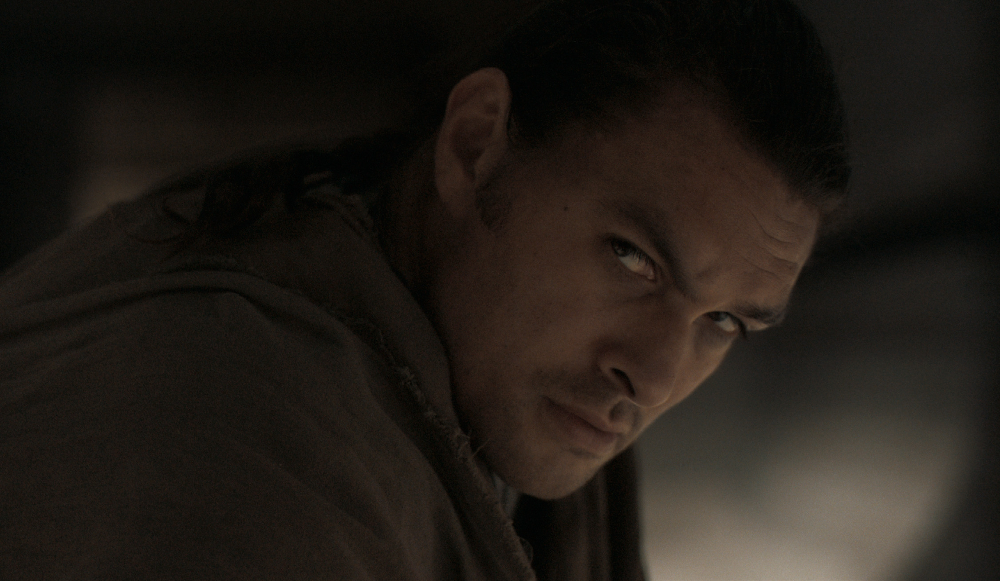

HOUSE ATREIDES
Duncan Idaho
The Killer Extraordinary.
A legendary Swordmaster and virtuoso warrior, Duncan Idaho may be House Atreides’ deadliest weapon. A fearless pilot and expert in stealth reconnaissance, he is the eyes and ears of Duke Leto, and the first of House Atreides to leave footprints on the desert sands of Dune. A man of loyalty and lethality, his guiding principle is to fight for the royal family as though they were his own, and to defend Paul Atreides with his life.
